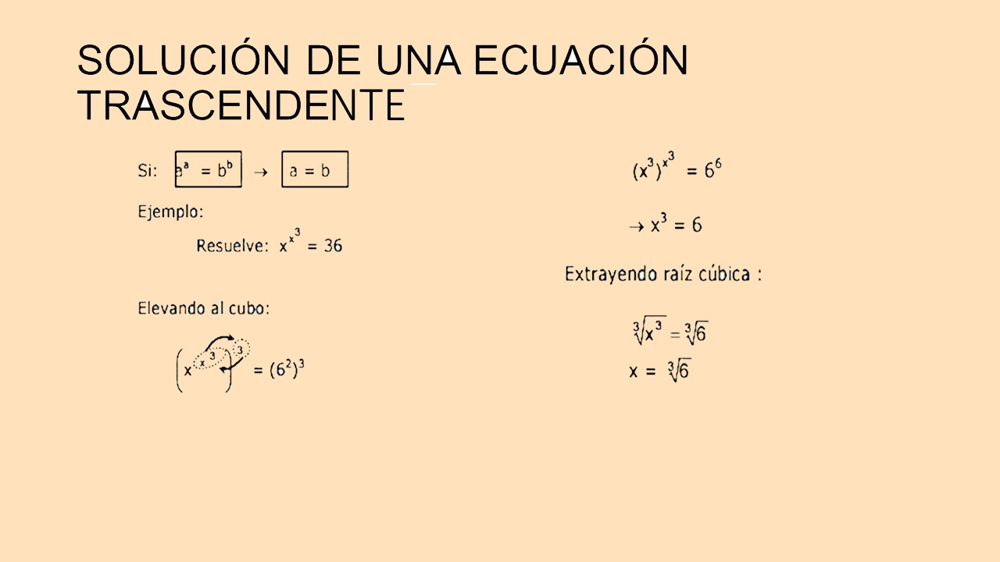
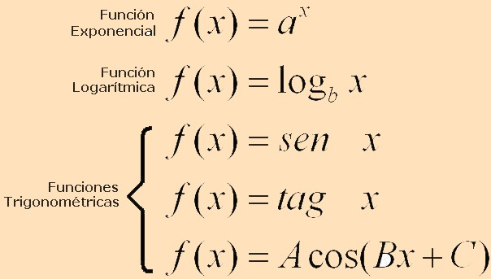

Una función trascendente es aquella que trasciende el álgebra. La ecuación F(x)=G(x) es trascendente si alguna de las funciones F o G no es algebráica, es decir, no se puede resolver utilizando operaciones algebráicas. Las funciones exponenciales, logarítmicas, trigonométricas e hiperbólicas son ejemplos de ecuaciones trascendentes.
 